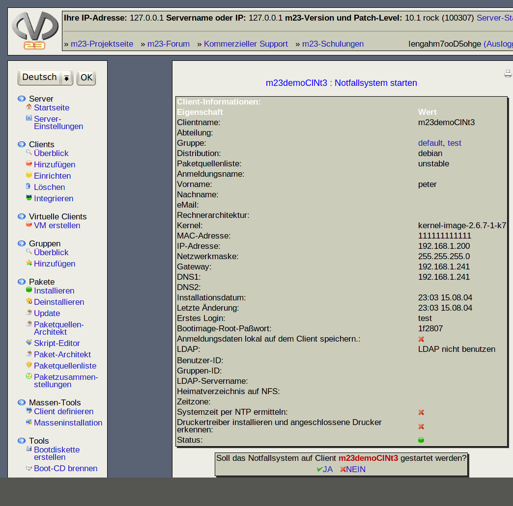

Möchten Sie zu Reparatur- oder Diagnosezwecken einen Client booten, so können Sie das Notfallsystem über Netzwerk booten. Nach dem Booten startet der Client eine Konsole, auf der Sie arbeiten können. Klicken Sie zum Starten des Notfallsystems auf ''Notfallsystem'' hinter dem Clientnamen.

Unterabschnitte
root
2019-07-18